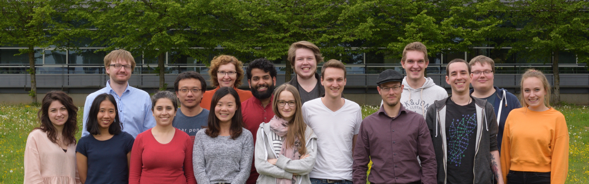

Research Group @ Chair of Experimental Bioinformatics @ TUM Our group aims to elucidate the molecular mechanisms behind phenotypes and diseases. To that end, we develop integrative bioinformatics methods leveraging network analysis, machine learning, and statistics. We apply own and existing approaches in close collaboration with biologists and physicians to derive insights from multi-omics data.